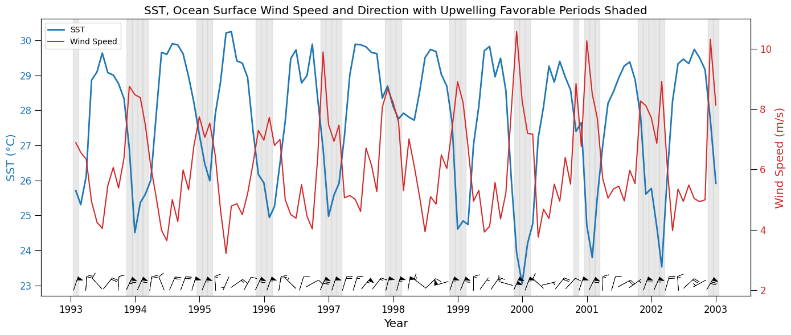

#pip install earthaccess==0.13.0 zarr==2.18.7 fastparquet==2024.5.0 xarray==2025.4.0 fsspec==2024.10.0 "dask[complete]"==2024.5.2 h5netcdf==1.3.0 ujson==5.10.0 matplotlib==3.9.2 kerchunk==0.2.7 virtualizarr==1.3.2 cftime cartopyExplore Gulf of Tehuantepec extreme wind events and ocean response
Notebook to read, condition and resample, and plot various NASA cloud optimized earth science datasets created with virtualizarr
Gulf of Tehuantepec SST response, January 24 2025. Image source: https://worldview.earthdata.nasa.gov/?v=-108.72259017741943,7.33173524018812,-78.34905371495425,20.763067902309658&l=Reference_Labels_15m(hidden),Reference_Features_15m(hidden),Coastlines_15m,GHRSST_L4_MUR_Sea_Surface_Temperature,VIIRS_NOAA21_CorrectedReflectance_TrueColor(hidden),VIIRS_NOAA20_CorrectedReflectance_TrueColor(hidden),VIIRS_SNPP_CorrectedReflectance_TrueColor(hidden),MODIS_Aqua_CorrectedReflectance_TrueColor(hidden),MODIS_Terra_CorrectedReflectance_TrueColor(hidden)&lg=true&t=2025-01-24-T03%3A09%3A40Z
Gulf of Tehuantepec wind event, January 11-12, 2011
Image source https://en.wikipedia.org/wiki/Tehuantepecer
Import Packages
Note using Zarr Version 2
Successfully tested with the following critical component versions: kerchunk==0.2.7, virtualizarr–1.3.2, xarray==2025.4.0 zarr==2.18.7
pip list | grep -E "zarr|xarray|virtualizarr|kerchunk|earthaccess"earthaccess 0.13.0
kerchunk 0.2.7
virtualizarr 1.3.2
xarray 2025.4.0
zarr 2.18.7
Note: you may need to restart the kernel to use updated packages.# Built-in packages
import os
import sys
# Filesystem management
import fsspec
import earthaccess
# Data handling
import xarray as xr
import numpy as np
# Parallel computing
import multiprocessing
from dask import delayed
import dask.array as da
from dask.distributed import Client
# Other
import matplotlib.pyplot as plt
import cartopy.crs as ccrs
import cartopy.feature as cfeatureOther Setup
xr.set_options( # display options for xarray objects
display_expand_attrs=False,
display_expand_coords=True,
display_expand_data=True,
)<xarray.core.options.set_options at 0x11d2fe6c0>Obtain credentials and generate a VDS mapper
The first step is to find the S3 or https endpoints to the files. Handling access credentials to Earthdata and then finding the endpoints can be done a number of ways (e.g. using the requests, s3fs packages) but we use the earthaccess package for its ease of use.
# Get Earthdata creds
earthaccess.login()<earthaccess.auth.Auth at 0x1125f4260>In the next step we define a generic VDS wrapper and that can be wrapped into a function (no modification needed). The mapper will contain all the required access credentials and can be passed directly to xarray. In the future this step will likely be built into to earthaccess but for now we must define it in the notebook. The only inputs to the function are:
1. The link to the VDS reference file.
2. Whether or not you are accessing the data in the cloud in the same region as the data. For most beginning users this argument will be set to False.def get_vds_mapper(vds_link, in_cloud_region=False):
"""
Produces a virtudal dataset mapper that can be passed to xarray.
* vds_link: str, link to the mapper
* in_cloud_region: bool, True if in cloud in the same region as the data,
False otherwise.
"""
if in_cloud_region:
fs_data = earthaccess.get_s3_filesystem(daac="PODAAC")
remote_protocol = "s3"
else:
fs_data = earthaccess.get_fsspec_https_session()
remote_protocol = "https"
storage_opts = {"fo": vds_link, "remote_protocol": remote_protocol, "remote_options": fs_data.storage_options}
fs_ref = fsspec.filesystem('reference', **storage_opts)
return fs_ref.get_mapper('')Open reference files and perform operations and ploting
OSTIA Daily Sea Surface Temperature (OSTIA-UKMO-L4-GLOB-REP-v2.0)
%%time
# Open the OSTIA Reprocessed SST reference file (OSTIA-UKMO-L4-GLOB-REP-v2.0)
vds_link = 'https://archive.podaac.earthdata.nasa.gov/podaac-ops-cumulus-public/virtual_collections/OSTIA-UKMO-L4-GLOB-REP-v2.0/OSTIA-UKMO-L4-GLOB-REP-v2.0_virtual_https.json'
vds_mapper = get_vds_mapper(vds_link, in_cloud_region=False)CPU times: user 758 ms, sys: 184 ms, total: 942 ms
Wall time: 4.03 s%%time
## No modification needed. Read as xarray dataset.
sst_ds = xr.open_dataset(
vds_mapper, engine="zarr", chunks={},
backend_kwargs={"consolidated": False}
)
print(sst_ds)
sst_ds<xarray.Dataset> Size: 11TB
Dimensions: (time: 15340, lat: 3600, lon: 7200)
Coordinates:
* lat (lat) float32 14kB -89.97 -89.93 -89.88 ... 89.93 89.97
* lon (lon) float32 29kB -180.0 -179.9 -179.9 ... 179.9 180.0
* time (time) datetime64[ns] 123kB 1982-01-01T12:00:00 ... 202...
Data variables:
analysed_sst (time, lat, lon) float64 3TB dask.array<chunksize=(1, 1200, 2400), meta=np.ndarray>
analysis_error (time, lat, lon) float64 3TB dask.array<chunksize=(1, 1200, 2400), meta=np.ndarray>
mask (time, lat, lon) float32 2TB dask.array<chunksize=(1, 1800, 3600), meta=np.ndarray>
sea_ice_fraction (time, lat, lon) float64 3TB dask.array<chunksize=(1, 1800, 3600), meta=np.ndarray>
Attributes: (39)
CPU times: user 706 ms, sys: 70 ms, total: 776 ms
Wall time: 817 ms<xarray.Dataset> Size: 11TB
Dimensions: (time: 15340, lat: 3600, lon: 7200)
Coordinates:
* lat (lat) float32 14kB -89.97 -89.93 -89.88 ... 89.93 89.97
* lon (lon) float32 29kB -180.0 -179.9 -179.9 ... 179.9 180.0
* time (time) datetime64[ns] 123kB 1982-01-01T12:00:00 ... 202...
Data variables:
analysed_sst (time, lat, lon) float64 3TB dask.array<chunksize=(1, 1200, 2400), meta=np.ndarray>
analysis_error (time, lat, lon) float64 3TB dask.array<chunksize=(1, 1200, 2400), meta=np.ndarray>
mask (time, lat, lon) float32 2TB dask.array<chunksize=(1, 1800, 3600), meta=np.ndarray>
sea_ice_fraction (time, lat, lon) float64 3TB dask.array<chunksize=(1, 1800, 3600), meta=np.ndarray>
Attributes: (39)CCMP 6 Hourly Ocean Winds (CCMP_WINDS_10M6HR_L4_V3.1)
%%time
# Open the CCMP Winds reference file (CCMP_WINDS_10M6HR_L4_V3.1)
vds_link = 'https://archive.podaac.earthdata.nasa.gov/podaac-ops-cumulus-public/virtual_collections/CCMP_WINDS_10M6HR_L4_V3.1/CCMP_WINDS_10M6HR_L4_V3.1_virtual_https.json'
vds_mapper = get_vds_mapper(vds_link, in_cloud_region=False)
wind_ds = xr.open_dataset(
vds_mapper, engine="zarr", chunks={},
backend_kwargs={"consolidated": False}
)
print(wind_ds)
wind_ds<xarray.Dataset> Size: 781GB
Dimensions: (latitude: 720, longitude: 1440, time: 47056)
Coordinates:
* latitude (latitude) float32 3kB -89.88 -89.62 -89.38 ... 89.38 89.62 89.88
* longitude (longitude) float32 6kB 0.125 0.375 0.625 ... 359.4 359.6 359.9
* time (time) datetime64[ns] 376kB 1993-01-02 ... 2025-03-31T18:00:00
Data variables:
nobs (time, latitude, longitude) float32 195GB dask.array<chunksize=(1, 720, 1440), meta=np.ndarray>
uwnd (time, latitude, longitude) float32 195GB dask.array<chunksize=(1, 720, 1440), meta=np.ndarray>
vwnd (time, latitude, longitude) float32 195GB dask.array<chunksize=(1, 720, 1440), meta=np.ndarray>
ws (time, latitude, longitude) float32 195GB dask.array<chunksize=(1, 720, 1440), meta=np.ndarray>
Attributes: (44)
CPU times: user 600 ms, sys: 64 ms, total: 664 ms
Wall time: 2.11 s<xarray.Dataset> Size: 781GB
Dimensions: (latitude: 720, longitude: 1440, time: 47056)
Coordinates:
* latitude (latitude) float32 3kB -89.88 -89.62 -89.38 ... 89.38 89.62 89.88
* longitude (longitude) float32 6kB 0.125 0.375 0.625 ... 359.4 359.6 359.9
* time (time) datetime64[ns] 376kB 1993-01-02 ... 2025-03-31T18:00:00
Data variables:
nobs (time, latitude, longitude) float32 195GB dask.array<chunksize=(1, 720, 1440), meta=np.ndarray>
uwnd (time, latitude, longitude) float32 195GB dask.array<chunksize=(1, 720, 1440), meta=np.ndarray>
vwnd (time, latitude, longitude) float32 195GB dask.array<chunksize=(1, 720, 1440), meta=np.ndarray>
ws (time, latitude, longitude) float32 195GB dask.array<chunksize=(1, 720, 1440), meta=np.ndarray>
Attributes: (44)# Determine and append the wind direction to the wind_ds dataset
# Calculate wind direction in degrees using arctan2(-u, -v)
wind_dir = np.arctan2(-wind_ds.uwnd, -wind_ds.vwnd) # radians
wind_dir = np.degrees(wind_dir) # convert to degrees
wind_dir = (wind_dir + 360) % 360 # ensure values are between 0 and 360
# Assign to dataset
wind_ds['wind_direction'] = wind_dir
wind_ds['wind_direction'].attrs.update({
'units': 'degrees',
'standard_name': 'wind_from_direction',
'long_name': 'Wind Direction (meteorological)'
})
wind_ds<xarray.Dataset> Size: 976GB
Dimensions: (latitude: 720, longitude: 1440, time: 47056)
Coordinates:
* latitude (latitude) float32 3kB -89.88 -89.62 -89.38 ... 89.62 89.88
* longitude (longitude) float32 6kB 0.125 0.375 0.625 ... 359.6 359.9
* time (time) datetime64[ns] 376kB 1993-01-02 ... 2025-03-31T18:...
Data variables:
nobs (time, latitude, longitude) float32 195GB dask.array<chunksize=(1, 720, 1440), meta=np.ndarray>
uwnd (time, latitude, longitude) float32 195GB dask.array<chunksize=(1, 720, 1440), meta=np.ndarray>
vwnd (time, latitude, longitude) float32 195GB dask.array<chunksize=(1, 720, 1440), meta=np.ndarray>
ws (time, latitude, longitude) float32 195GB dask.array<chunksize=(1, 720, 1440), meta=np.ndarray>
wind_direction (time, latitude, longitude) float32 195GB dask.array<chunksize=(1, 720, 1440), meta=np.ndarray>
Attributes: (44)Region and time window selection
%%time
# Define region
# Gulf of Tehuantepec, MX
lat_min = 14.
lat_max = 15.
lon_min = -96.
lon_max = -95.
lat_range = (lat_min, lat_max)
lon_range = (lon_min, lon_max)
# for datasets that use 0-360 deg lon
lon_range_360 = (lon_min+360, lon_max+360)
# Define the time slice
start_date = '1993-01-01'
#end_date = '1998-12-31'
end_date = '2002-12-31'
#end_date = '1994-12-31'
time_range =(start_date, end_date)CPU times: user 4 μs, sys: 0 ns, total: 4 μs
Wall time: 6.2 μsResample spatial SST and Wind Speed means to a common monthly time step and load into memory
%%time
# A concise method to subset, resample, and average the xarray data all on one line
sst_resample = sst_ds.analysed_sst.sel(lon=slice(*lon_range), lat=slice(*lat_range), time=slice(*time_range)
).mean(["lat", "lon"]).resample(time="1ME").mean().load()
wind_speed_resample = wind_ds.ws.sel(longitude=slice(*lon_range_360), latitude=slice(*lat_range), time=slice(*time_range)
).mean(["latitude", "longitude"]).resample(time="1ME").mean().load()CPU times: user 5min 30s, sys: 33.9 s, total: 6min 4s
Wall time: 3min 38sResample the wind directions means to the same common monthly time step and find the upwelling favorable wind direction and speed times
%%time
# Resample u and v winds (monthly mean)
u_resample = wind_ds.uwnd.sel(
longitude=slice(*lon_range_360),
latitude=slice(*lat_range),
time=slice(*time_range)
).mean(["latitude", "longitude"]).resample(time="1ME").mean().load()
v_resample = wind_ds.vwnd.sel(
longitude=slice(*lon_range_360),
latitude=slice(*lat_range),
time=slice(*time_range)
).mean(["latitude", "longitude"]).resample(time="1ME").mean().load()
# Resample wind direction
wind_dir_resample = wind_ds.wind_direction.sel(
longitude=slice(*lon_range_360),
latitude=slice(*lat_range),
time=slice(*time_range)
).mean(["latitude", "longitude"]).resample(time="1ME").mean().load()CPU times: user 23min 49s, sys: 1min 2s, total: 24min 51s
Wall time: 8min 52s# Identify upwelling favorable wind direction times (0–120 degrees) and speeds of at least 6.8 m/s
favorable_mask = (wind_dir_resample >= 0 ) & (wind_dir_resample <= 120) & (wind_speed_resample >= 6.8)
favorable_times = wind_dir_resample.time[favorable_mask]Check with a plot
fig, ax1 = plt.subplots(figsize=(14, 6))
# SST Plot
color = 'tab:blue'
ax1.set_xlabel('Year')
ax1.set_ylabel('SST (°C)', color=color, fontsize='x-large')
ax1.set_xlabel('Year', fontsize='x-large')
ax1.plot(sst_resample['time'], (sst_resample - 273.15), linewidth=2, color=color, label='SST')
ax1.tick_params(axis='y', labelcolor=color, size=8, labelsize=12)
ax1.tick_params(axis='x', size=8, labelsize=12)
# Wind Speed Plot
ax2 = ax1.twinx()
color = 'tab:red'
ax2.set_ylabel('Wind Speed (m/s)', color=color, fontsize='x-large')
ax2.plot(wind_speed_resample['time'], wind_speed_resample, color=color, label='Wind Speed')
ax2.tick_params(axis='y', labelcolor=color, size=8, labelsize=12)
# Add vertical shaded regions for favorable wind direction periods
for ft in favorable_times.values:
ax1.axvspan(ft - np.timedelta64(15, 'D'), ft + np.timedelta64(15, 'D'),
color='lightgray', alpha=0.5)
# Add wind barbs in lower panel (directional vectors)
# Normalize u and v components for visual length
barb_skip = 2 # Plot every nth point to reduce clutter if needed
barb_scale = 30 # Adjust scale for clarity
# Only plot barbs every few months
barb_time = u_resample.time.values[::barb_skip]
u_plot = u_resample.values[::barb_skip]
v_plot = v_resample.values[::barb_skip]
# Set position for barbs slightly below wind speed line
barb_y = np.full_like(u_plot, wind_speed_resample.min().item() - 1)
# Barbs on ax2 (wind axis)
ax2.barbs(barb_time, barb_y, u_plot, v_plot,
length=6, pivot='middle', barb_increments=dict(half=1, full=2, flag=5),
color='k', linewidth=0.5)
# Add legend
lines_1, labels_1 = ax1.get_legend_handles_labels()
lines_2, labels_2 = ax2.get_legend_handles_labels()
ax2.legend(lines_1 + lines_2, labels_1 + labels_2, loc='upper left')
plt.title("SST, Ocean Surface Wind Speed and Direction with Upwelling Favorable Periods Shaded", fontsize='x-large')
fig.tight_layout()
plt.show()
Add ECCO Ocean Velocity - Daily Mean 0.5 Degree (Version 4 Release 4) dataset (ECCO_L4_OCEAN_VEL_05DEG_DAILY_V4R4)
%%time
# Open the ECCO Ocean Velocity - Daily Mean 0.5 Degree (Version 4 Release 4) dataset (ECCO_L4_OCEAN_VEL_05DEG_DAILY_V4R4)
vds_link = 'https://archive.podaac.earthdata.nasa.gov/podaac-ops-cumulus-public/virtual_collections/ECCO_L4_OCEAN_VEL_05DEG_DAILY_V4R4/ECCO_L4_OCEAN_VEL_05DEG_DAILY_V4R4_virtual_https.json'
vds_mapper = get_vds_mapper(vds_link, in_cloud_region=False)
ecco_current_ds = xr.open_dataset(
vds_mapper, engine="zarr", chunks={},
backend_kwargs={"consolidated": False}
)
print(ecco_current_ds)
ecco_current_ds<xarray.Dataset> Size: 1TB
Dimensions: (time: 9497, Z: 50, latitude: 360, longitude: 720, nv: 2)
Coordinates:
* Z (Z) float32 200B -5.0 -15.0 -25.0 ... -5.461e+03 -5.906e+03
Z_bnds (Z, nv) float32 400B dask.array<chunksize=(50, 2), meta=np.ndarray>
* latitude (latitude) float32 1kB -89.75 -89.25 -88.75 ... 89.25 89.75
latitude_bnds (latitude, nv) float32 3kB dask.array<chunksize=(360, 2), meta=np.ndarray>
* longitude (longitude) float32 3kB -179.8 -179.2 -178.8 ... 179.2 179.8
longitude_bnds (longitude, nv) float32 6kB dask.array<chunksize=(720, 2), meta=np.ndarray>
* time (time) datetime64[ns] 76kB 1992-01-01T18:00:00 ... 2017-1...
time_bnds (time, nv) datetime64[ns] 152kB dask.array<chunksize=(1, 2), meta=np.ndarray>
Dimensions without coordinates: nv
Data variables:
EVEL (time, Z, latitude, longitude) float32 492GB dask.array<chunksize=(1, 25, 180, 360), meta=np.ndarray>
NVEL (time, Z, latitude, longitude) float32 492GB dask.array<chunksize=(1, 25, 180, 360), meta=np.ndarray>
WVEL (time, Z, latitude, longitude) float32 492GB dask.array<chunksize=(1, 25, 180, 360), meta=np.ndarray>
Attributes: (53)
CPU times: user 921 ms, sys: 79.2 ms, total: 1 s
Wall time: 3.74 s<xarray.Dataset> Size: 1TB
Dimensions: (time: 9497, Z: 50, latitude: 360, longitude: 720, nv: 2)
Coordinates:
* Z (Z) float32 200B -5.0 -15.0 -25.0 ... -5.461e+03 -5.906e+03
Z_bnds (Z, nv) float32 400B dask.array<chunksize=(50, 2), meta=np.ndarray>
* latitude (latitude) float32 1kB -89.75 -89.25 -88.75 ... 89.25 89.75
latitude_bnds (latitude, nv) float32 3kB dask.array<chunksize=(360, 2), meta=np.ndarray>
* longitude (longitude) float32 3kB -179.8 -179.2 -178.8 ... 179.2 179.8
longitude_bnds (longitude, nv) float32 6kB dask.array<chunksize=(720, 2), meta=np.ndarray>
* time (time) datetime64[ns] 76kB 1992-01-01T18:00:00 ... 2017-1...
time_bnds (time, nv) datetime64[ns] 152kB dask.array<chunksize=(1, 2), meta=np.ndarray>
Dimensions without coordinates: nv
Data variables:
EVEL (time, Z, latitude, longitude) float32 492GB dask.array<chunksize=(1, 25, 180, 360), meta=np.ndarray>
NVEL (time, Z, latitude, longitude) float32 492GB dask.array<chunksize=(1, 25, 180, 360), meta=np.ndarray>
WVEL (time, Z, latitude, longitude) float32 492GB dask.array<chunksize=(1, 25, 180, 360), meta=np.ndarray>
Attributes: (53)Resample the ocean vertical velocity means to the same common monthly time step
%%time
# Do the vertical velocity resampling for the first depth level (5 m below the surface)
depth_min = -5
depth_max = 0
depth_range = (depth_min, depth_max)
vertical_vel_resample = ecco_current_ds.WVEL.sel(longitude=slice(*lon_range), latitude=slice(*lat_range), time=slice(*time_range), Z=slice(0,-5)
).mean(["latitude", "longitude"]).resample(time="1ME").mean().load()CPU times: user 1min 35s, sys: 3.59 s, total: 1min 38s
Wall time: 47.4 sfig, ax1 = plt.subplots(figsize=(14, 6))
# SST Plot
color = 'tab:blue'
ax1.set_xlabel('Year')
ax1.set_ylabel('SST (°C)', color=color, fontsize='x-large')
ax1.set_xlabel('Year', fontsize='x-large')
ax1.plot(sst_resample['time'], (sst_resample - 273.15), linewidth=2, color=color, label='SST')
ax1.tick_params(axis='y', labelcolor=color, size=8, labelsize=12)
ax1.tick_params(axis='x', size=8, labelsize=12)
# Ocean Vertical Velocity Plot
ax2 = ax1.twinx()
color = 'tab:purple'
ax2.set_ylabel('Vertical Velocity (m/s)', color=color, fontsize='x-large')
ax2.plot(vertical_vel_resample['time'], vertical_vel_resample, color=color, label='Vertical Velocity (5m)')
ax2.tick_params(axis='y', labelcolor=color, size=8, labelsize=12)
# Mask for the positive (upwelling) vertical velocities
positive_mask = (vertical_vel_resample > 0)
# Plot positive velocities (in a highlighted style)
ax2.plot(vertical_vel_resample['time'].where(positive_mask), vertical_vel_resample.where(positive_mask), color=color, linewidth=3,
label='Positive Vertical Velocity (5m)')
# Add vertical shaded regions for favorable wind direction periods from previous plot
for ft in favorable_times.values:
ax1.axvspan(ft - np.timedelta64(15, 'D'), ft + np.timedelta64(15, 'D'),
color='lightgray', alpha=0.5)
# Add legend
lines_1, labels_1 = ax1.get_legend_handles_labels()
lines_2, labels_2 = ax2.get_legend_handles_labels()
ax2.legend(lines_1 + lines_2, labels_1 + labels_2, loc='upper left')
plt.title("SST and Ocean Vertical Velocity with Upwelling Favorable Periods Shaded", fontsize='x-large')
fig.tight_layout()
plt.show()Add ECCO Ocean Temperature and Salinity - Daily Mean 0.5 Degree (Version 4 Release 4) dataset (ECCO_L4_TEMP_SALINITY_05DEG_DAILY_V4R4)
%%time
# Open the ECCO Ocean Temperature and Salinity - Daily Mean 0.5 Degree (Version 4 Release 4) dataset (ECCO_L4_TEMP_SALINITY_05DEG_DAILY_V4R4)
vds_link = 'https://archive.podaac.earthdata.nasa.gov/podaac-ops-cumulus-public/virtual_collections/ECCO_L4_TEMP_SALINITY_05DEG_DAILY_V4R4/ECCO_L4_TEMP_SALINITY_05DEG_DAILY_V4R4_virtual_https.json'
vds_mapper = get_vds_mapper(vds_link, in_cloud_region=False)
ecco_temp_salt_ds = xr.open_dataset(
vds_mapper, engine="zarr", chunks={},
backend_kwargs={"consolidated": False}
)
print(ecco_temp_salt_ds)
ecco_temp_salt_ds<xarray.Dataset> Size: 985GB
Dimensions: (time: 9497, Z: 50, latitude: 360, longitude: 720, nv: 2)
Coordinates:
* Z (Z) float32 200B -5.0 -15.0 -25.0 ... -5.461e+03 -5.906e+03
Z_bnds (Z, nv) float32 400B dask.array<chunksize=(50, 2), meta=np.ndarray>
* latitude (latitude) float32 1kB -89.75 -89.25 -88.75 ... 89.25 89.75
latitude_bnds (latitude, nv) float32 3kB dask.array<chunksize=(360, 2), meta=np.ndarray>
* longitude (longitude) float32 3kB -179.8 -179.2 -178.8 ... 179.2 179.8
longitude_bnds (longitude, nv) float32 6kB dask.array<chunksize=(720, 2), meta=np.ndarray>
* time (time) datetime64[ns] 76kB 1992-01-01T18:00:00 ... 2017-1...
time_bnds (time, nv) datetime64[ns] 152kB dask.array<chunksize=(1, 2), meta=np.ndarray>
Dimensions without coordinates: nv
Data variables:
SALT (time, Z, latitude, longitude) float32 492GB dask.array<chunksize=(1, 25, 180, 360), meta=np.ndarray>
THETA (time, Z, latitude, longitude) float32 492GB dask.array<chunksize=(1, 25, 180, 360), meta=np.ndarray>
Attributes: (53)
CPU times: user 748 ms, sys: 39.3 ms, total: 787 ms
Wall time: 5.89 s<xarray.Dataset> Size: 985GB
Dimensions: (time: 9497, Z: 50, latitude: 360, longitude: 720, nv: 2)
Coordinates:
* Z (Z) float32 200B -5.0 -15.0 -25.0 ... -5.461e+03 -5.906e+03
Z_bnds (Z, nv) float32 400B dask.array<chunksize=(50, 2), meta=np.ndarray>
* latitude (latitude) float32 1kB -89.75 -89.25 -88.75 ... 89.25 89.75
latitude_bnds (latitude, nv) float32 3kB dask.array<chunksize=(360, 2), meta=np.ndarray>
* longitude (longitude) float32 3kB -179.8 -179.2 -178.8 ... 179.2 179.8
longitude_bnds (longitude, nv) float32 6kB dask.array<chunksize=(720, 2), meta=np.ndarray>
* time (time) datetime64[ns] 76kB 1992-01-01T18:00:00 ... 2017-1...
time_bnds (time, nv) datetime64[ns] 152kB dask.array<chunksize=(1, 2), meta=np.ndarray>
Dimensions without coordinates: nv
Data variables:
SALT (time, Z, latitude, longitude) float32 492GB dask.array<chunksize=(1, 25, 180, 360), meta=np.ndarray>
THETA (time, Z, latitude, longitude) float32 492GB dask.array<chunksize=(1, 25, 180, 360), meta=np.ndarray>
Attributes: (53)Resample the ocean surface salinity means to the same common monthly time step
%%time
# Do the ocean salinity resampling for the first depth level (5 m below the surface)
depth_min = -5
depth_max = 0
depth_range = (depth_min, depth_max)
salt_resample = ecco_temp_salt_ds.SALT.sel(longitude=slice(*lon_range), latitude=slice(*lat_range), time=slice(*time_range), Z=slice(0,-5)
).mean(["latitude", "longitude"]).resample(time="1ME").mean().load()CPU times: user 1min 20s, sys: 2.78 s, total: 1min 22s
Wall time: 44.9 sfig, ax1 = plt.subplots(figsize=(14, 6))
# SST Plot
color = 'tab:blue'
ax1.set_xlabel('Year')
ax1.set_ylabel('SST (°C)', color=color, fontsize='x-large')
ax1.set_xlabel('Year', fontsize='x-large')
ax1.plot(sst_resample['time'], (sst_resample - 273.15), linewidth=2, color=color, label='SST')
ax1.tick_params(axis='y', labelcolor=color, size=8, labelsize=12)
ax1.tick_params(axis='x', size=8, labelsize=12)
# Ocean Surface Salinity Plot
ax2 = ax1.twinx()
color = 'tab:orange'
ax2.set_ylabel('SSS (ppt)', color=color, fontsize='x-large')
ax2.plot(salt_resample['time'], salt_resample, color=color, label='Sea Surface Salinity (5m)')
ax2.tick_params(axis='y', labelcolor=color, size=8, labelsize=12)
# Add vertical shaded regions for favorable wind direction periods from previous plot
for ft in favorable_times.values:
ax1.axvspan(ft - np.timedelta64(15, 'D'), ft + np.timedelta64(15, 'D'),
color='lightgray', alpha=0.5)
# Add legend
lines_1, labels_1 = ax1.get_legend_handles_labels()
lines_2, labels_2 = ax2.get_legend_handles_labels()
ax2.legend(lines_1 + lines_2, labels_1 + labels_2, loc='upper left')
plt.title("SST and Sea Surface Salinity (SSS) with Upwelling Favorable Periods Shaded", fontsize='x-large')
fig.tight_layout()
plt.show()Use parallel processing to speed the resample() implementations
# Set up parallel processing
# Check how many cpu's are on this VM:
print("CPU count =", multiprocessing.cpu_count())
# Start up cluster and print some information about it:
client = Client(n_workers=32, threads_per_worker=1)
print(client.cluster)
print("View any work being done on the cluster here", client.dashboard_link)CPU count = 32
LocalCluster(c6deaf14, 'tcp://127.0.0.1:35297', workers=32, threads=32, memory=122.27 GiB)
View any work being done on the cluster here https://cluster-nwbxl.dask.host/jupyter/proxy/8787/status%%time
# Execute Tasks: Convert to weekly (1W) monthly (1ME) or annual means (1YE).
# use load() to load into memory the result
# A concise method to subset, resample, and average the xarray data all on one line
sst_resample = sst_ds.analysed_sst.sel(lon=slice(*lon_range), lat=slice(*lat_range), time=slice(*time_range)
).mean(["lat", "lon"]).resample(time="1ME").mean().load()
wind_speed_resample = wind_ds.ws.sel(longitude=slice(*lon_range_360), latitude=slice(*lat_range), time=slice(*time_range)
).mean(["latitude", "longitude"]).resample(time="1ME").mean().load()
u_resample = wind_ds.uwnd.sel(
longitude=slice(*lon_range_360),
latitude=slice(*lat_range),
time=slice(*time_range)
).mean(["latitude", "longitude"]).resample(time="1ME").mean().load()
v_resample = wind_ds.vwnd.sel(
longitude=slice(*lon_range_360),
latitude=slice(*lat_range),
time=slice(*time_range)
).mean(["latitude", "longitude"]).resample(time="1ME").mean().load()
wind_dir_resample = wind_ds.wind_direction.sel(
longitude=slice(*lon_range_360),
latitude=slice(*lat_range),
time=slice(*time_range)
).mean(["latitude", "longitude"]).resample(time="1ME").mean().load()
# vertical velocity
# surface salinity
# Trigger computation with parallel execution....optional
sst_data, wind_speed_data, u_data, v_data, wind_dir_data = da.compute(sst_resample, wind_speed_resample, u_resample, v_resample, wind_dir_resample)CPU times: user 4min 39s, sys: 47.4 s, total: 5min 26s
Wall time: 13min 50sCheck with a plot
# Identify favorable wind direction times (0–120 degrees) and speeds of at least 6.8 m/s
favorable_mask = (wind_dir_resample >= 0 ) & (wind_dir_resample <= 120) & (wind_speed_resample >= 6.8)
favorable_times = wind_dir_resample.time[favorable_mask]fig, ax1 = plt.subplots(figsize=(14, 6))
# SST Plot
color = 'tab:blue'
ax1.set_xlabel('Year')
ax1.set_ylabel('SST (°K)', color=color)
ax1.plot(sst_resample['time'], sst_resample, linewidth=2, color=color, label='SST')
ax1.tick_params(axis='y', labelcolor=color)
# Wind Speed Plot
ax2 = ax1.twinx()
color = 'tab:red'
ax2.set_ylabel('Wind Speed (m/s)', color=color)
ax2.plot(wind_speed_resample['time'], wind_speed_resample, color=color, label='Wind Speed')
ax2.tick_params(axis='y', labelcolor=color)
# Add vertical shaded regions for favorable wind direction periods
for ft in favorable_times.values:
ax1.axvspan(ft - np.timedelta64(15, 'D'), ft + np.timedelta64(15, 'D'),
color='lightgray', alpha=0.3)
# Add wind barbs in lower panel (directional vectors)
# Normalize u and v components for visual length
barb_skip = 2 # Plot every nth point to reduce clutter if needed
barb_scale = 30 # Adjust scale for clarity
# Only plot barbs every few months
barb_time = u_resample.time.values[::barb_skip]
u_plot = u_resample.values[::barb_skip]
v_plot = v_resample.values[::barb_skip]
# Set position for barbs slightly below wind speed line
barb_y = np.full_like(u_plot, wind_speed_resample.min().item() - 1)
# Barbs on ax2 (wind axis)
ax2.barbs(barb_time, barb_y, u_plot, v_plot,
length=5, pivot='middle', barb_increments=dict(half=1, full=2, flag=5),
color='k', linewidth=0.5)
# Add legend
lines_1, labels_1 = ax1.get_legend_handles_labels()
lines_2, labels_2 = ax2.get_legend_handles_labels()
ax2.legend(lines_1 + lines_2, labels_1 + labels_2, loc='upper left')
plt.title("SST, Ocean Surface Wind Speed, and Wind Direction (with Favorable Periods Shaded)")
fig.tight_layout()
plt.show()Determine the regional longterm January mean over all the OSTIA SST data (40+ years) and plot it
%%time
# Define spatial region, adjust as needed
# Gulf of Tehuantepec, MX
lat_min = 12.
lat_max = 17.
lon_min = -97.
lon_max = -92.
lat_range = (lat_min, lat_max)
lon_range = (lon_min, lon_max)
# Define the time slice
start_date = '1982-01-01'
end_date = '2023-12-31'
time_range =(start_date, end_date)
# Subset the datasets
# OSTIA SST
sst_region = sst_ds['analysed_sst'].sel(lon=slice(*lon_range), lat=slice(*lat_range), time=slice(*time_range))
# Select only January time steps using .dt.month == 1
sst_month = sst_region.sel(time=sst_region['time'].dt.month == 1)
print(sst_month)<xarray.DataArray 'analysed_sst' (time: 1302, lat: 100, lon: 100)> Size: 104MB
dask.array<getitem, shape=(1302, 100, 100), dtype=float64, chunksize=(1, 100, 100), chunktype=numpy.ndarray>
Coordinates:
* lat (lat) float32 400B 12.02 12.07 12.12 12.18 ... 16.88 16.92 16.98
* lon (lon) float32 400B -96.97 -96.93 -96.88 ... -92.12 -92.07 -92.03
* time (time) datetime64[ns] 10kB 1982-01-01T12:00:00 ... 2023-01-31T12...
Attributes: (7)
CPU times: user 39.7 ms, sys: 2.71 ms, total: 42.4 ms
Wall time: 40.5 ms%%time
# calculate the spatial mean and convert to degrees Celsius
sst_month_avg = sst_month.mean(dim='time').compute() - 273.15CPU times: user 1min 29s, sys: 14.3 s, total: 1min 43s
Wall time: 1min 13s# Plot it
# Create the figure and axes using a PlateCarree projection
fig, ax = plt.subplots(figsize=(10, 6), subplot_kw={'projection': ccrs.PlateCarree()})
# Plot the data
sst_month_avg.plot(
ax=ax,
transform=ccrs.PlateCarree(),
cmap='coolwarm',
vmin=23, vmax=28,
cbar_kwargs={'label': 'SST (°C)'}
)
# Add coastlines and land
ax.coastlines(resolution='10m', linewidth=0.8)
#ax.add_feature(cfeature.LAND, facecolor='lightgray')
ax.add_feature(cfeature.BORDERS, linestyle=':')
from cartopy.feature import NaturalEarthFeature
land_10m = NaturalEarthFeature('physical', 'land', '10m', facecolor='lightgray')
ax.add_feature(land_10m)
# Set the extent of the region
ax.set_extent([lon_min, lon_max, lat_min, lat_max], crs=ccrs.PlateCarree())
# Add gridlines
gl = ax.gridlines(draw_labels=True, linewidth=0.5, color='gray', linestyle='--')
gl.top_labels = False
gl.right_labels = False
plt.title('Average January SST, 1982-2023\n 12°–17°N, 97°–92°W')
plt.show()